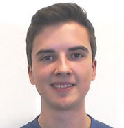

Wer ist Samuel Arzt
">Ich bin 20 Jahre alt, geboren in Österreich, Kärnten und zur Zeit lebe ich in Salzburg, wo ich MMT an der FH-Salzburg studiere. Zur Zeit arbeite ich auch geringfügig für Redox - Game Labs als C# - Developer und als Tutor in den Lehrveranstaltungen "Einführung Programmieren" und "Angewandte Mathematik" an meiner Fachhochschule.
2014 habe ich am BRG-Viktring maturiert. Da ich schon damals sehr an Informatik interessiert war, habe ich 3 Jahre lang das Wahlpflichtfach Informatik besucht und entschied mich auch dafür fächerübergreifend in Mathematik und Informatik zu maturieren. Ein großer Teil meiner Java-Projekte stammt aus dieser Zeit.
Mein Interesse in die Informatik hat mich auch zu zwei Praktika an der Alpen Adria Universität Klagenfurt bewegt. Im ersten Praktikum durfte ich in einem Team von 3 Personen einen kleinen Lego-NXT Roboter in C# programmieren, der mit Hilfe der Microsoft Kinect mit Handgesten gesteuert werden sollte. Das zweite Praktikum bestand daraus in einem Team von 4 Personen eine AR Parrot Drohne zu programmieren, damit sie ein spezielles Muster mit der onboard Kamera erkennen kann und diesem folgt. Dazu haben wir in Java eine simple Nutzeroberfläche programmiert, die zusätzlich die analytischen Vorgänge der Drohne anzeigt. In diesen beiden Praktika konnte ich viel Erfahrung sammeln, vor allem auch in den Bereichen Teamarbeit und Organisation.
Nach meiner Matura habe ich für 9 Monate meinen Zivildienst beim Österreichischen Roten Kreuz abgeleistet.
Nach meinem ersten Jahr an der Fachhochschule, machte ich ein Praktikum bei Redox - Game Labs, in dem ich als C# - Developer in einem 7-Köpfigen Team an einem Unity-Projekt arbeiten durfte. Nach dem Praktikum entschied sich Redox dazu mich geringfügig neben meinem Studium anzustellen.